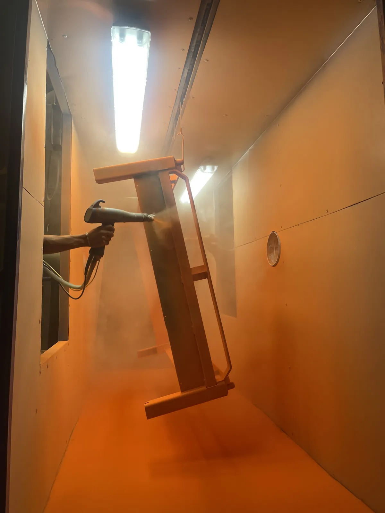

Si buscas qué es la pintura electrostática, la respuesta corta es esta: es un recubrimiento en polvo seco que se aplica sobre piezas metálicas con ayuda de carga eléctrica y que después se hornea hasta formar una capa continua, dura y uniforme. También se conoce como pintura en polvo o powder coating, y es el acabado industrial que ves en gabinetes, estanterías, autopartes, muebles metálicos y estructuras de herrería.
En esta guía te explicamos cómo funciona, para qué sirve, en qué piezas se aplica y cuándo conviene maquilar en lugar de montar tu propia línea. Es la guía base de nuestro blog y en cada sección te dejamos el enlace al tema que lo desarrolla.
¿Qué es la pintura electrostática?
La pintura electrostática es un sistema de recubrimiento en el que la pintura no es un líquido, sino un polvo fino formado por resina, pigmentos y aditivos. Ese polvo se carga eléctricamente al salir de la pistola de aplicación y se adhiere a una pieza metálica conectada a tierra. Después, la pieza entra a un horno donde el polvo se funde, fluye y cura para formar la película final.
El nombre viene del principio que hace posible la aplicación: la atracción electrostática entre el polvo cargado y el metal. En cotizaciones y búsquedas también lo verás escrito como pintura electroestática o pintura electrostatica sin acento, o simplemente como pintura en polvo.
En Steel Paint somos maquiladores: no fabricamos pintura ni vendemos equipo. Tu empresa nos envía las piezas metálicas y nosotros nos encargamos de todo el proceso en nuestra planta de Santa Catarina, Nuevo León. Si quieres entender bien ese modelo de servicio, lee nuestra guía sobre qué es la maquila de pintura en polvo.
Cómo funciona la pintura electrostática y cómo es el proceso
El funcionamiento se entiende con dos ideas: cargar el polvo y curarlo. Primero, la pistola de aplicación le da una carga eléctrica al polvo. Como la pieza está conectada a tierra, las partículas son atraídas hacia ella y la cubren de forma pareja, incluso en bordes y esquinas, donde se quedan sujetas a la superficie mientras la pieza avanza hacia el horno.
Segundo, el calor del horno funde el polvo y activa la reacción química de la resina. Al enfriarse, queda una película sólida adherida al metal.
Alrededor de esas dos ideas, un proceso industrial completo suma etapas que definen la calidad final. En Steel Paint cada lote pasa por recepción e inspección, pretratamiento de la superficie, aplicación electrostática, horneado y control de calidad dimensional antes de la entrega. El pretratamiento limpia y prepara el metal para que el polvo adhiera bien, y es la etapa que más pesa en la duración del acabado; por eso le dedicamos una guía completa sobre preparación de superficie para powder coating.
Para qué sirve la pintura electrostática y en qué piezas y metales se aplica
La pintura electrostática sirve para proteger y dar acabado a piezas metálicas que deben durar en uso real. Estas son las razones por las que se ha vuelto el estándar en la industria manufacturera:
Protección contra la corrosión: la película curada funciona como barrera entre el metal y la humedad del ambiente. Qué tan bien cumple esa función depende en gran parte de la preparación de la superficie, por eso en un maquilador serio el pretratamiento no es opcional.
Resistencia al uso diario: el recubrimiento en polvo curado tiene buena resistencia al rayado, a los golpes menores y al desgaste por manipulación. En una pieza que se manipula todos los días, esto se traduce en menos retoques.
Acabado uniforme y repetible: el color, el brillo y la textura pueden mantenerse consistentes de un lote a otro, algo clave cuando tus piezas se ensamblan con otras o cuando tu cliente compara cada entrega contra una muestra.
Aplicación sin solventes: al ser un polvo seco, no requiere disolventes para aplicarse. Eso simplifica la operación y el cumplimiento ambiental frente a los sistemas de pintura líquida.
En cuanto a materiales, en Steel Paint procesamos piezas ferrosas y no ferrosas. Los ejemplos más comunes que recibimos son soportes y brackets, gabinetes y carcasas, estanterías, perfiles, barandales, estructuras de herrería y muebles metálicos. Si tu duda es entre pintar o galvanizar, revisa nuestra comparativa entre recubrimiento en polvo y galvanizado, y si tu pieza va a la intemperie, te conviene leer la guía de pintura para muebles metálicos de exterior.
Pintura electrostática, pintura en polvo y otros términos que se confunden
Pintura electrostática, pintura en polvo y powder coating son tres formas de nombrar la misma tecnología: "pintura en polvo" describe el material, "electrostática" describe cómo se aplica y "powder coating" es el término en inglés que usan las fichas técnicas de los fabricantes de polvo.
Lo que sí es distinto es la pintura líquida. En una pintura líquida la resina y el pigmento vienen disueltos en un solvente o en agua y el acabado se forma cuando ese medio se evapora; en la pintura en polvo no hay medio líquido y el acabado se forma con el curado en horno. Si estás decidiendo entre una y otra, te ayuda nuestra comparativa de pintura en polvo vs pintura líquida.
Además, circulan nombres parecidos como pintura aerostática, hidrostática, electrolítica o electrosoldada. Algunos son procesos distintos y otros son nombres que se usan por error para referirse a la pintura electrostática. Si te los mencionan en una cotización, pide que te aclaren el proceso y el material.
Tipos de polvo y acabados: el mapa general
El polvo se clasifica principalmente por su resina base. Las familias más comunes son el poliéster, el epóxico, el poliuretano y los híbridos epoxi-poliéster, y cada una responde a un tipo de uso: el poliéster es el punto de partida habitual en piezas de exterior por su comportamiento frente al sol, mientras que el epóxico destaca por su resistencia química pero no se recomienda por sí solo con exposición solar directa.
Aparte de la resina, el acabado se define por el nivel de brillo, la textura y el color: liso, satinado, mate, texturizado, metálico y más. Lo desarrollamos en nuestra guía de tipos de acabados en pintura electrostática. En Steel Paint trabajamos con polvos de AkzoNobel, Axalta, Sherwin Williams, Tiger y Vitracoat.
¿Pintar en tu planta o contratar una maquila?
Pintar internamente exige más que una pistola: necesitas pretratamiento, cabina, sistema de recuperación de polvo, horno de curado y personal capacitado. La decisión depende de tu volumen y de tu operación.
Cuándo tiene sentido pintar en tu planta: cuando tu volumen es alto y constante, tienes espacio para la línea y estás dispuesto a asumir la inversión, el mantenimiento y la capacitación que implica operarla bien.
Cuándo conviene maquilar: cuando tu volumen cambia de un mes a otro, no cuentas con la infraestructura o necesitas un acabado consistente sin sumar personal ni equipo a tu planta. En ese caso subcontratas el proceso a un maquilador que ya tiene el pretratamiento, la línea y los hornos, tanto el continuo como el batch.
Si decides maquilar, antes de mandar tu primera pieza conviene saber cómo elegir un maquilador de pintura en polvo en Monterrey.
Dónde se usa la pintura electrostática en Monterrey
La industria del noreste de México concentra buena parte de la demanda de acabado en polvo. Estos son los sectores que atendemos con más frecuencia desde Santa Catarina:
Automotriz y autopartes: proveedores Tier 1 y Tier 2 que necesitan uniformidad de color y de acabado lote tras lote en soportes, herrajes y componentes estructurales. Profundizamos en el tema en nuestra guía para la industria automotriz de Monterrey.
Mueble metálico y herrería: sillas, estantes, lockers, barandales y estructuras donde el color y la resistencia al uso definen cómo se percibe el producto final.
HVAC y refrigeración: gabinetes, carcasas y componentes de equipos de climatización y refrigeración que requieren un acabado limpio y durable.
Construcción y arquitectura metálica: perfiles, puertas, marcos y elementos estructurales que necesitan un acabado estético y protección frente al ambiente.
Metalmecánica y manufactura general: carcasas, bases y estructuras de maquinaria y equipo industrial donde el acabado protege la pieza y presenta el producto.
Si ya sabes qué piezas quieres pintar, obtén un estimado del costo de tu lote en línea.
Preguntas frecuentes sobre la pintura electrostática
¿Para qué sirve la pintura electrostática?
Sirve para proteger las piezas metálicas contra la corrosión y darles un acabado uniforme, resistente al uso diario. Se elige cuando una pieza necesita cumplir una función y, al mismo tiempo, verse bien y mantener su color: autopartes, gabinetes, estanterías, muebles metálicos, herrería y estructuras, entre muchas otras.
¿La pintura electrostática es lo mismo que la pintura en polvo?
En la práctica sí. "Pintura en polvo" o "powder coating" nombra el material, un polvo seco de resina y pigmentos, y "electrostática" nombra la forma de aplicarlo, con carga eléctrica. Cuando alguien pide pintura electrostática en una planta industrial casi siempre se refiere a pintura en polvo curada en horno.
¿Qué metales se pueden pintar con pintura electrostática?
En Steel Paint procesamos piezas ferrosas y no ferrosas. Lo que define si una pieza es adecuada es su tamaño, su geometría y la preparación de su superficie, así que lo más rápido es enviarnos las medidas y el tipo de metal para que confirmemos la factibilidad de tu proyecto.
¿Cuánto dura la pintura electrostática?
Depende de tres factores: la calidad del pretratamiento, la formulación del polvo y el ambiente donde se use la pieza, sobre todo si está expuesta al sol, la humedad o los químicos. Por eso no damos una cifra genérica. Si tu proyecto es de intemperie, revisa nuestra guía de pintura electrostática para muebles metálicos de exterior.
¿Es mejor la pintura electrostática que la pintura líquida?
Para la mayoría de las piezas metálicas industriales, la pintura en polvo ofrece un acabado más resistente y uniforme en un solo ciclo de aplicación y curado. La pintura líquida sigue siendo la opción en piezas que no son de metal o en volúmenes muy bajos. Lo detallamos en la comparativa de pintura en polvo vs pintura líquida.
¿Listo para pintar tus piezas?
La pintura electrostática es un recubrimiento en polvo que se aplica con carga eléctrica y se cura en horno para dar a las piezas metálicas un acabado duradero y uniforme. Hacerla bien depende del pretratamiento, de la aplicación y del curado, y por eso a la mayoría de las empresas les conviene contratar a un maquilador especializado que ya tiene el proceso resuelto.
En Steel Paint llevamos más de 10 años trabajando en Nuevo León. Contamos con línea automatizada, pretratamiento propio y dos hornos: uno continuo para producción en serie y uno batch para lotes pequeños o piezas especiales. Da el siguiente paso: calcula el costo estimado de tu proyecto, envíanos fotos o planos de tus piezas por WhatsApp o cuéntanos tu proyecto y un asesor te ayudará a definir el polvo y el acabado adecuados.